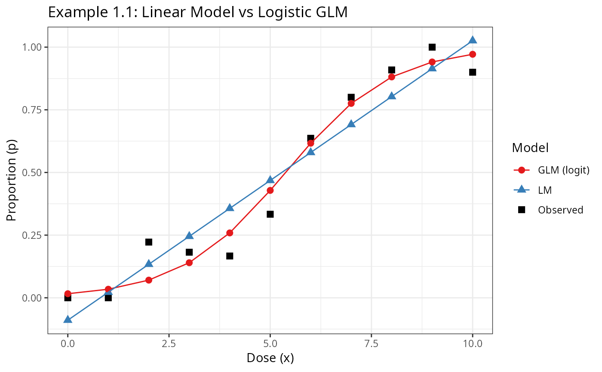

Example 1.1 (Stroup et al., 2024) illustrates the difference between fitting a Gaussian linear model and a logistic GLM to binary proportion data. Using Table 1.1 dose–response data, it shows that the logistic GLM provides better fit to bounded proportions than a linear model that can exceed [0,1].
References
Stroup, W. W., Ptukhina, M., and Garai, S. (2024). Generalized Linear Mixed Models: Modern Concepts, Methods and Applications (2nd ed.). CRC Press.
Author
Muhammad Yaseen (myaseen208@gmail.com)
Adeela Munawar (adeela.uaf@gmail.com)
Examples
data(Table1.1)
## Linear Model (Section 1.2.3)
Exam1.1.lm1 <- stats::lm(formula = y / Nx ~ x, data = Table1.1)
summary(Exam1.1.lm1)
#>
#> Call:
#> stats::lm(formula = y/Nx ~ x, data = Table1.1)
#>
#> Residuals:
#> Min 1Q Median 3Q Max
#> -0.18995 -0.09450 0.05671 0.08904 0.10883
#>
#> Coefficients:
#> Estimate Std. Error t value Pr(>|t|)
#> (Intercept) -0.08944 0.06625 -1.350 0.21
#> x 0.11152 0.01120 9.958 3.71e-06 ***
#> ---
#> Signif. codes: 0 ‘***’ 0.001 ‘**’ 0.01 ‘*’ 0.05 ‘.’ 0.1 ‘ ’ 1
#>
#> Residual standard error: 0.1175 on 9 degrees of freedom
#> Multiple R-squared: 0.9168, Adjusted R-squared: 0.9075
#> F-statistic: 99.16 on 1 and 9 DF, p-value: 3.706e-06
#>
if (requireNamespace("parameters", quietly = TRUE)) {
parameters::model_parameters(Exam1.1.lm1)
}
#> Parameter | Coefficient | SE | 95% CI | t(9) | p
#> -----------------------------------------------------------------
#> (Intercept) | -0.09 | 0.07 | [-0.24, 0.06] | -1.35 | 0.210
#> x | 0.11 | 0.01 | [ 0.09, 0.14] | 9.96 | < .001
#>
#> Uncertainty intervals (equal-tailed) and p-values (two-tailed) computed
#> using a Wald t-distribution approximation.
## GLM with logit link (binomial family, Section 1.2.4)
Exam1.1.glm1 <- stats::glm(
formula = cbind(y, Nx - y) ~ x,
family = stats::binomial(link = "logit"),
data = Table1.1
)
summary(Exam1.1.glm1)
#>
#> Call:
#> stats::glm(formula = cbind(y, Nx - y) ~ x, family = stats::binomial(link = "logit"),
#> data = Table1.1)
#>
#> Coefficients:
#> Estimate Std. Error z value Pr(>|z|)
#> (Intercept) -4.1086 0.7421 -5.536 3.09e-08 ***
#> x 0.7640 0.1273 6.004 1.93e-09 ***
#> ---
#> Signif. codes: 0 ‘***’ 0.001 ‘**’ 0.01 ‘*’ 0.05 ‘.’ 0.1 ‘ ’ 1
#>
#> (Dispersion parameter for binomial family taken to be 1)
#>
#> Null deviance: 84.903 on 10 degrees of freedom
#> Residual deviance: 7.492 on 9 degrees of freedom
#> AIC: 31.187
#>
#> Number of Fisher Scoring iterations: 5
#>
if (requireNamespace("parameters", quietly = TRUE)) {
parameters::model_parameters(Exam1.1.glm1)
}
#> Parameter | Log-Odds | SE | 95% CI | z | p
#> ---------------------------------------------------------------
#> (Intercept) | -4.11 | 0.74 | [-5.73, -2.80] | -5.54 | < .001
#> x | 0.76 | 0.13 | [ 0.54, 1.04] | 6.00 | < .001
#>
#> Uncertainty intervals (profile-likelihood) and p-values (two-tailed)
#> computed using a Wald z-distribution approximation.
#>
#> The model has a log- or logit-link. Consider using `exponentiate =
#> TRUE` to interpret coefficients as ratios.
## Figure 1.1 — LM vs GLM fitted proportions
plot_df <- rbind(
data.frame(x = Table1.1$x,
p = Table1.1$y / Table1.1$Nx,
Model = "Observed"),
data.frame(x = Table1.1$x,
p = Exam1.1.lm1$fitted.values,
Model = "LM"),
data.frame(x = Table1.1$x,
p = Exam1.1.glm1$fitted.values,
Model = "GLM (logit)")
)
ggplot2::ggplot(
plot_df,
ggplot2::aes(x = x, y = p, colour = Model, shape = Model)
) +
ggplot2::geom_point(size = 2.5) +
ggplot2::geom_line(
data = subset(plot_df, Model != "Observed")
) +
ggplot2::scale_colour_manual(
values = c("Observed" = "black",
"LM" = "#377EB8",
"GLM (logit)" = "#E41A1C")
) +
ggplot2::labs(
title = "Example 1.1: Linear Model vs Logistic GLM",
x = "Dose (x)",
y = "Proportion (p)",
colour = "Model",
shape = "Model"
) +
ggplot2::theme_bw()

## Correlation of fitted values with observed
cat("LM correlation:", round(stats::cor(Table1.1$y / Table1.1$Nx,
Exam1.1.lm1$fitted.values), 4), "\n")
#> LM correlation: 0.9575
cat("GLM correlation:", round(stats::cor(Table1.1$y / Table1.1$Nx,
Exam1.1.glm1$fitted.values), 4), "\n")
#> GLM correlation: 0.9818